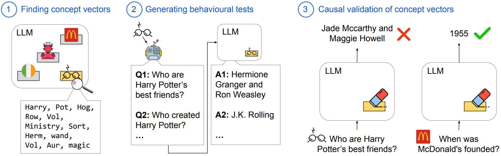

üåå ConceptVectors Benchmark
Intrinsic Evaluation of Unlearning Using Parametric Knowledge Traces
Why we need LLM Unlearning?
Large language models, are trained in an unsupervised manner on extensive pre-training corpora, which might inadvertently result in the encoding of harmful, sensitive, or copyright-protected knowledge. So recently there has been surging interest in developing methods for post-training unlearning of these target knowledge captured in LLM for satety.
Like:What is the problem of Existing Unlearning and its Evaluation?
Existing unlearning methods largely rely on behavioural tests for evaluating unlearninng effectiveness, such as QA task or Text Completion task about the removed knowledge. However, it is impossible for these current behavior-based evaluation to cover all possible behavior inputs. A well-performing unlearning method in these tests may still generate the unlearned information post-unlearning under strong adversarial attacks, such as Jailbreak attacks, also indicating that in practice certain knowledge has not been removed from the model.
Therefore, we need to internally evaluate whether these unlearning methods truly erase the knowledge within LLM, or merely modify the model's behavior? From the parameters-based evaluation, we are able to cover more possibilites and evalute unlearning more thoroughly.
What we do for a better and more thorough evaluation?
Based on the above motivation, we found the existence of parametric “Concept Vector”, also named "knowledge traces". These are specific sets of parameters that strongly correlate with the information to be erased. More specifically, they are the parameters of certain dimensions in the final layer of the MLP modules in the LLM.
We found that these concept vectors have a crucial role in the storage of this corresponding knowledge, which can greatly influence the generation of certain concept knowledge and is causally related to unlearning. But current evaluations of unlearning methods do not monitor these internal information that encoded in model's paramters encodes about the concept. We argue that internal erasure of the concept should be a real goal of unlearning methods. Based on these thinkings, we create ConceptVectors Benchmark, which is used for more thoroughly evaluating the unlearning menthods internally. (see next section)

How Concept Vector works.
Examples for ConceptVectors
How we construct our benchmark?
We propose ConceptVectors Benchmark, a benchmark dataset containing hundreds of common concepts and their parametric knowledge traces within two open-source LLMs: LLaMA2-7B-chat and OLMo-7B. It is the first and preliminary benchmark for internally evaluating unlearning methods, and assessing the residual knowledge inherently brought by LLM's pretraining. ConceptVectors consists of both behavioural evaluation and intrinsic evaluation, which covers 285 diverse concepts located in different layers in the models.
How we construct our ConceptVectors benchmark.
ConceptVectors Benchmark Types Distribution.
Causal Validation Results for Concept Vectors: disrupting the vectors we localize will have a significant impact on the output of target knowledge, while the influence on irrelevant knowledge is minor, demonstrating specificity.
Main Experiments and Jailbreak Result
Our experiments show that various existing unlearning methods, especially finetuning-based methods fall short at removing parametric knowledge, minimally impact concept vectors. The residual knowledge traces, then, can be used to elicit the model to express knowledge of the supposedly erased concept.
But directly ablating these vectors demonstrably removes the associated knowledge from the LLMs and significantly reduces their susceptibility to adversarial manipulation. Our results highlight the challenge and importance of erasing learned concepts in LLMs and call for new methods that effectively remove parametric knowledge traces.
Results on Jailbreak Experiments: Needle is the baseline we propose that directly ablating these concept vectors, which demonstrates better performance in thoroughly unlearning target knowledge while preserving the model's general abilities.
Jailbreak attacks examples on the unlearned model trained under Gradient Difference or Needle. Gradient Difference is a stable-performing finetuning-based method and Needle is an oracle baseline we proposed which only train on concept vectors. The resuls shows that existing finetuning-based methods on LM's all parameters can not guard against jailbreak attacks. See more results in our paper
How to Cite
@misc{hong2024intrinsic,
title={Intrinsic Evaluation of Unlearning Using Parametric Knowledge Traces},
author={Yihuai Hong and Lei Yu and Shauli Ravfogel and Haiqin Yang and Mor Geva},
year={2024},
eprint={2406.11614},
archivePrefix={arXiv},
primaryClass={id='cs.CL' full_name='Computation and Language' is_active=True alt_name='cmp-lg' in_archive='cs' is_general=False description='Covers natural language processing. Roughly includes material in ACM Subject Class I.2.7. Note that work on artificial languages (programming languages, logics, formal systems) that does not explicitly address natural-language issues broadly construed (natural-language processing, computational linguistics, speech, text retrieval, etc.) is not appropriate for this area.'}
}